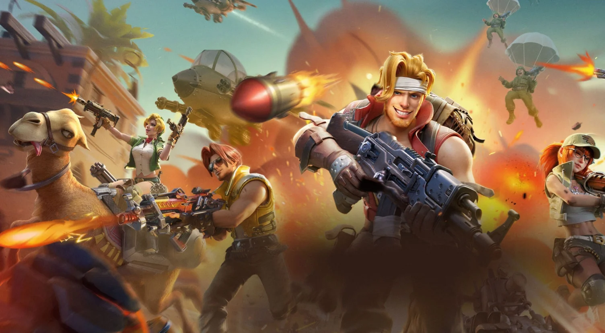

Sejarah Game Online
Game online adalah jenis permainan komputer yang menggunakan jaringan komputer. Biasanya jaringan yang digunakan adalah internet dll dan selalu menggunakan teknologi terkini seperti modem dan koneksi kabel. Umumnya, game online ditawarkan sebagai layanan tambahan oleh penyedia layanan online atau diakses langsung melalui sistem yang disediakan oleh perusahaan penyedia game. Game online dapat dimainkan secara bersamaan di komputer yang terhubung ke jaringan tertentu.
Menurut Andrew Rollings dan Ernest Adams, game online lebih tepat digambarkan sebagai teknologi daripada game; mekanisme yang menghubungkan pemain, bukan model permainan tertentu.
Menurut Webster's Dictionary edisi 1913, istilah permainan didefinisikan sebagai “kontes fisik atau mental di bawah aturan tertentu untuk lomba, hiburan, atau memenangkan taruhan; kartu as, perjudian; permainan peluang, permainan tanah, dll..”.
Ada banyak jenis game online, dari game sederhana berbasis teks hingga game dengan grafik kompleks yang menciptakan dunia virtual dengan banyak pemain sekaligus.
Game online memiliki dua elemen utama yaitu server dan client. Server melakukan manajemen game dan terhubung ke klien, sedangkan klien adalah pengguna game menggunakan fungsi server.
Game online dapat dianggap sebagai aktivitas sosial karena pemain dapat berinteraksi satu sama lain secara virtual dan sering kali membuat komunitas virtual.Game online dimulai pada tahun 1969, ketika game dua pemain awalnya dikembangkan untuk tujuan pendidikan. Kemudian, pada awal 1970-an, sistem pembagian waktu menurut Plato diciptakan untuk memfasilitasi pembelajaran online bagi siswa, di mana banyak pengguna dapat menggunakan komputer secara bersamaan sesuai kebutuhan. Dua tahun kemudian, Plato IV dirilis dengan fitur grafis baru yang digunakan untuk membuat game multipemain.
Game online benar-benar lepas landas setelah 1995, ketika pembatasan NSFNET (National Science Foundation Network) dicabut, memungkinkan akses ke seluruh domain Internet. Kesuksesan finansial diraih oleh perusahaan yang meluncurkan game ini, sehingga persaingan mulai berkembang dan membuat game online semakin kompleks hingga saat ini.
Rekomendasi Game Online
1. Metal Slug: Awakening

Game bertemakan run-and-gun ini telah memiliki tujuh seri utama, dan kini Anda dapat memainkannya di platform Android. Metal Slug: Awakening bekerja sama dengan TiMi Studios, selaku developer terkenal untuk game Android. Dan seri ini menjadi game pertama dari seri Metal Slug yang dapat dimainkan menggunakan ponsel Android.
Terkait dengan gameplay, Metal Slug: Awakening tetap mempertahankan side-scrolling mode yang membuat player berjalan ke depan dengan arah ke kanan atau ke kiri. Selain itu, Anda juga akan diajak untuk menyelesaikan misi yang sama seperti di seri Metal Slug dan Metal Slug 2 di awal permainan. Anda dapat memilih empat karakter original dari seri ini, misalnya Marco Rossi, Tarma Roving, Eri Kasamoto dan Fio Germi.
Perbedaan yang mencolok dari Metal Slug: Awakening terletak dari tampilannya yang didesain secara 3D, serta beberapa fitur yang umumnya ditemukan pada game free-to-play. Contohnya seperti sistem Gacha, perekrutan karakter-karakter baru, sekaligus Anda juga dapat mengupgrade senjata basic untuk karakter Anda. Ditambah lagi, Anda juga dapat menggunakan ultimate skill yang unik dari tiap karakternya.
2. Garena Undawn
Bisa dibilang, Garena Undawn adalah salah satu game online dan game bertemakan zombie apocalypse terbaik di Android. Bagaimana tidak, permainan MMORPG ini menghadirkan tampilan visual yang memukau untuk sebuah game di kelasnya.
Selain itu, game ini juga bersifat open-world, sehingga Anda bisa melakukan eksplorasi sesuai keinginan. Tentu, tanpa harus stuck di satu tempat saja. Misi-misi yang ada dalam Garena Undawn juga menarik, seru dan menantang. Dalam permainan, Anda akan berperan sebagai seorang survivor yang bergabung dengan kelompok The Raven. Dari sinilah, misi untuk menumpas para zombie dimulai.
Tak hanya kagum pada visual yang ditawarkan, tapi juga mekanisme gameplay, kontrol dan konsepnya. Garena Undawn membawa contoh realistis soal kerasnya bertahan di tengah kiamat zombie. Anda sebagai pemain harus memikirkan juga kesehatan tubuh dan mental karakternya. Jangan lupa beri mereka makan dan minum, serta tidur yang cukup. Usahakan juga untuk menjaga kebersihan tubuh dari karakter yang Anda mainkan.
3. FIFA Mobile
FIFA Mobile adalah salah satu game online populer di Android. Dari namanya saja sudah bisa diketahui kalau ini adalah game sepak bola, ya. Game ini adalah salah satu game sepak bola terbaik di Android. FIFA Mobile hadir dengan visual dan kontrol yang bagus tentunya. Di sini, Anda tidak cuma bertindak sebagai manajer dari tim, tapi juga turun langsung dan bermain.
Di FIFA Mobile, Anda akan dihadapkan dengan misi-misi tertentu. Contohnya seperti menyelesaikan skill game, melatih pemain, sampai mengikuti dan memenangkan pertandingan dengan lawan. Tentu saja, setiap misi punya reward tersendiri. Salah satu bentuk reward-nya adalah koin. Dengan koin ini, Anda bisa membayar biaya latihan pemain, dan hal lainnya dalam game. Jika masih bingung dengan cara mainnya, Anda tak perlu khawatir karena di awal akan ada tutorialnya.
Jenis Game Online Berdasarkan Grafik
1. Grafik 2 Dimensi(2D)
Game yang menggunakan teknologi ini biasanya termasuk game yang ringan dan tidak memuat sistem. Kelemahan dari game ini adalah kualitas gambar yang kurang enak dipandang dibandingkan dengan game 3D. Saat ini, game online umumnya menggunakan teknologi 2.5D, di mana karakter yang Anda mainkan dalam 2D, tetapi dalam lingkungan yang telah mengadopsi teknologi 3D.
2. Grafik 3 Dimensi(3D)
Game jenis 3D memiliki grafik yang lebih baik dalam deskripsi, sehingga sesuai dengan kenyataan. Biasanya pada game grafis 3D, sudut pandangnya mencapai 360 derajat sehingga kita bisa melihat seluruh dunia di dalam game. Namun, persyaratan komputer untuk game 3D cukup tinggi.